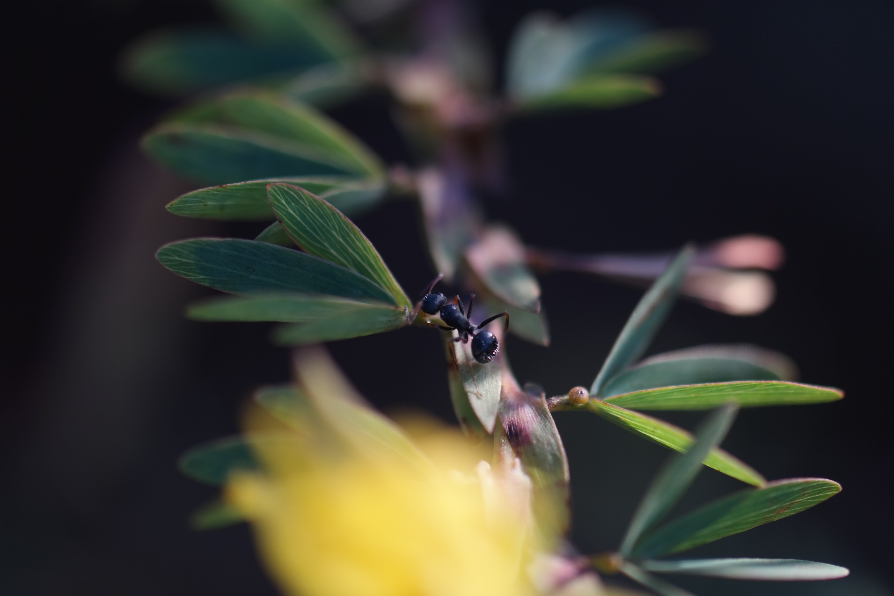
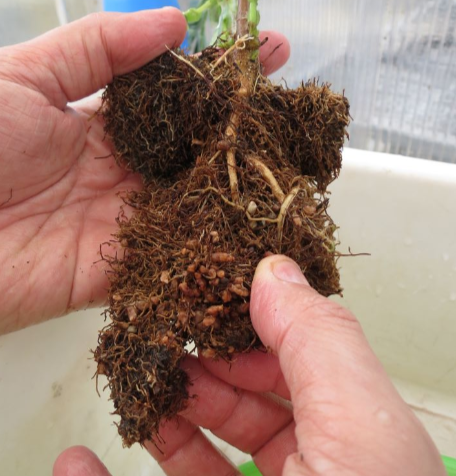
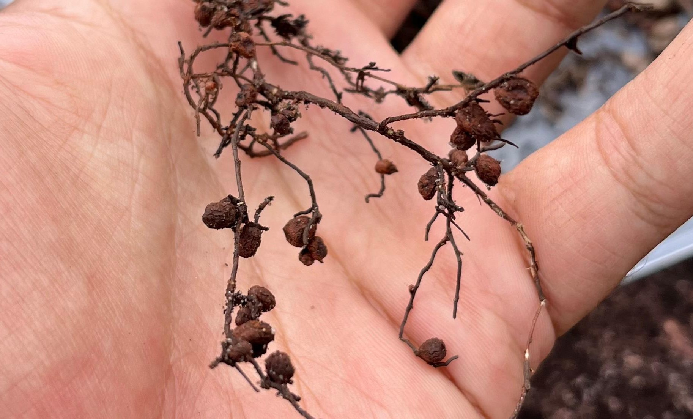

Douglas Donizeti de Souza
Mestrado pelo Programa de Pós-Graduação em Evolução e Diversidade — Universidade Federal do ABC (UFABC)
Bolsista FAPESP
- Mutualismo planta-formiga
- Fixação biológica de nitrogênio
- Meta-análise
Sobre
Seu projeto de mestrado investigou, por meio de uma meta-análise, se o mutualismo com bactérias fixadoras de nitrogênio modifica o efeito positivo das formigas protetoras na aptidão de plantas com nectários extraflorais. O trabalho contribuiu para compreender como múltiplos mutualismos interagem e se influenciam mutuamente na ecologia das plantas.
Graduado em Ciências Biológicas pela Universidade Estadual Paulista Júlio de Mesquita Filho (Unesp), campus de Botucatu. Atua como professor efetivo de Biologia na Rede Estadual Paulista de Ensino e de Ciências na Educação de Jovens e Adultos da Rede Municipal de Santo André, combinando a carreira docente com o interesse pela pesquisa em ecologia de interações.



